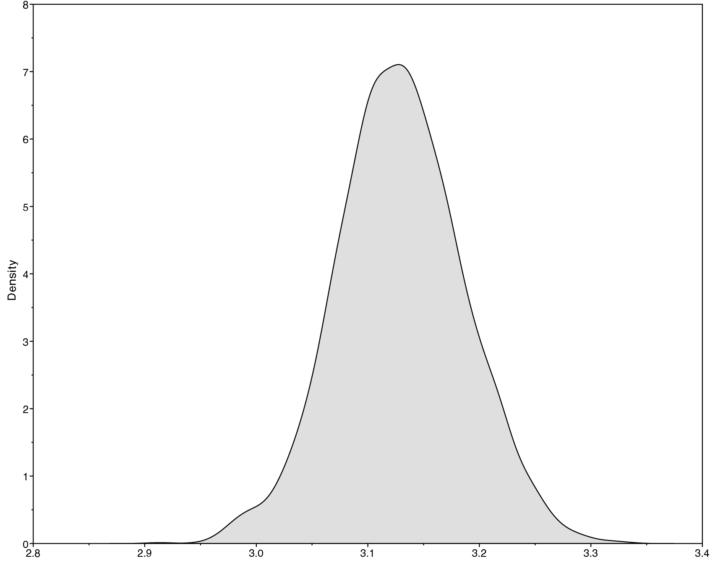
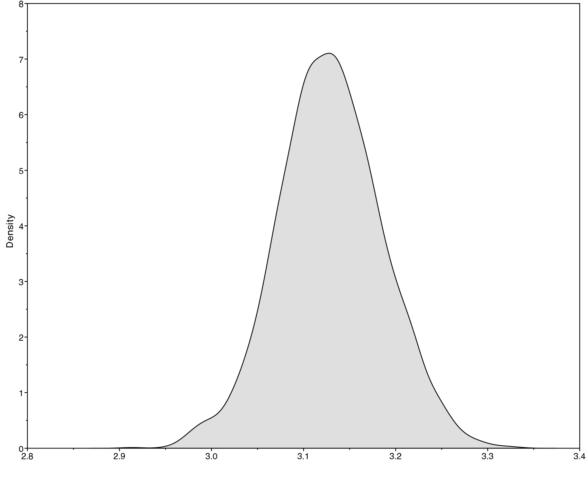
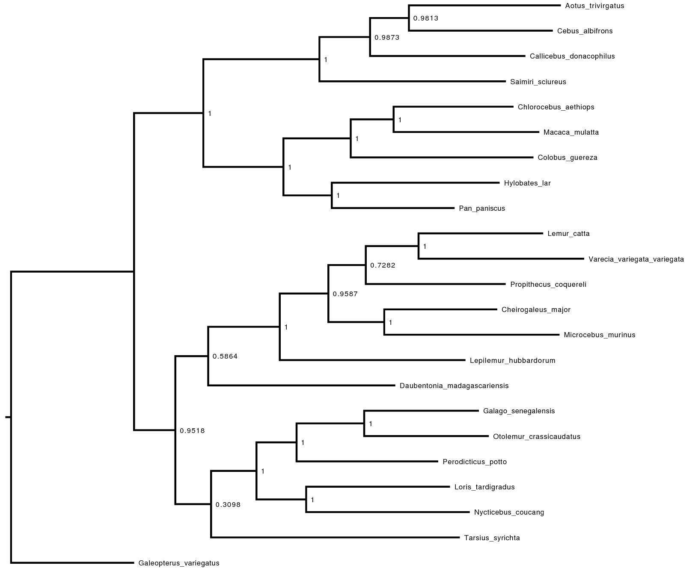
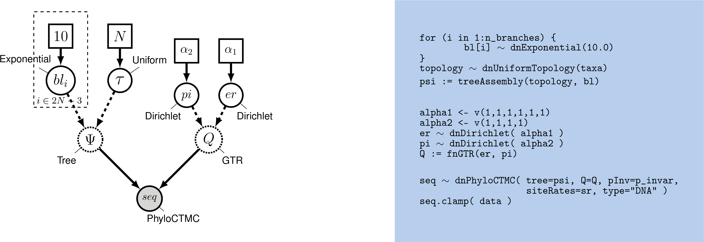
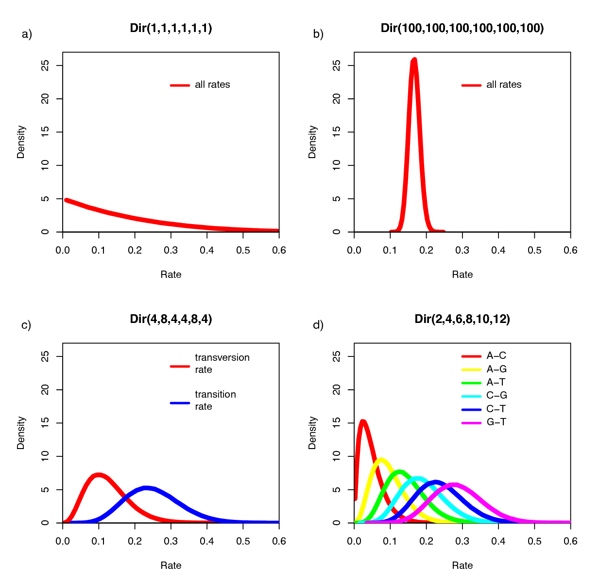

Nucleotide substitution models
Phylogenetic inference of nucleotide data using RevBayes
index.RmdDownload data here.
Overview
This tutorial covers the first protocol from (Höhna, Landis, and Heath 2017), which demonstrates how to set up and perform analyses using common nucleotide substitution models. The substitution models used in molecular evolution are continuous time Markov models, which are fully characterized by their instantaneous-rate matrix:
\[Q = \begin{pmatrix} -\mu_A & \mu_{AC} & \mu_{AG} & \mu_{AT} \\ \mu_{CA} & -\mu_C & \mu_{CG} & \mu_{CT} \\ \mu_{GA} & \mu_{GC} & -\mu_C & \mu_{GT} \\ \mu_{TA} & \mu_{TC} & \mu_{TG} & -\mu_T \end{pmatrix} \mbox{ ,}\]
where \(\mu_{ij}\) represents the instantaneous rate of substitution from state \(i\) to state \(j\). The diagonal elements \(\mu_i\) are the rates of not changing out of state \(i\), equal to the sum of the elements in the corresponding row. Given the instantaneous-rate matrix, \(Q\), we can compute the corresponding transition probabilities for a branch of length \(t\), \(P(t)\), by exponentiating the rate matrix:
\[P(t) = \begin{pmatrix} p_{AA}(t) & p_{AC}(t) & p_{AG}(t) & p_{AT}(t) \\ p_{CA}(t) & p_{CC}(t) & p_{CG}(t) & p_{CT}(t) \\ p_{GA}(t) & p_{GC}(t) & p_{GG}(t) & p_{GT}(t) \\ p_{TA}(t) & p_{TC}(t) & p_{TG}(t) & p_{TT}(t) \end{pmatrix} = e^{Qt} = \sum_{j=0}^\infty\frac{(Qt)^j}{j!} \mbox{ .}\]
Each of the named substitution models (e.g., HKY or GTR) has a uniquely defined instantaneous-rate matrix, \(Q\).
In this tutorial you will perform phylogeny inference under common models of DNA sequence evolution: JC, F81, HKY85, GTR, GTR+Gamma and GTR+Gamma+I. For all of these substitution models, you will perform a Markov chain Monte Carlo (MCMC) analysis to estimate phylogeny and other model parameters. The estimated trees will be unrooted trees with independent branch-length parameters. We will provide comments on how to modify the tutorial if you wish to estimate rooted, clock-like trees. All the assumptions will be covered in more detail later in this tutorial.
Specific functions for substitution models available in RevBayes.
| Model | Reference | Function | Parameters |
|---|---|---|---|
| Jukes-Cantor | (Jukes and Cantor 1969) | fnJC | - |
| K80 (a.k.a. K2P) | (Kimura 1980) | fnK80 | \(\kappa\) |
| Felsenstein-81 | (Felsenstein 1981) | fnF81 | \(\pi\) |
| T92 | (Tamura 1992) | fnT92 | \(\pi_{GC}\), \(\kappa\) |
| HKY | (Hasegawa, Kishino, and Yano 1985) | fnHKY | \(\pi\), \(\kappa\) |
| GTR | (Tavaré 1986) | fnGTR | \(\pi\), \(\epsilon\) |
Example: Character Evolution under the Jukes-Cantor Substitution Model
Getting Started
The first section of this exercise involves: 1. setting up a Jukes-Cantor (JC) substitution model for an alignment of the cytochrome b subunit; 2. approximating the posterior probability of the tree topology and node ages (and all other parameters) using MCMC, and; 3. summarizing the MCMC output by computing the maximum a posteriori tree.

Graphical model representation of a simple phylogenetic model. The graphical model shows the dependencies among parameters (Höhna et al. 2014). Here, the rate matrix \(Q\) is a constant variable because it is fixed and does not depend on any parameter. The only free parameters of this model, the Jukes-Cantor model, are the tree \(\Psi\) including the branch lengths.
We first consider the simplest substitution model described by (Jukes and Cantor 1969). The instantaneous-rate matrix for the JC substitution model is defined as
\[Q_{JC69} = \begin{pmatrix} {*} & \frac{1}{3} & \frac{1}{3} & \frac{1}{3} \\ \frac{1}{3} & {*} & \frac{1}{3} & \frac{1}{3} \\ \frac{1}{3} & \frac{1}{3} & {*} & \frac{1}{3} \\ \frac{1}{3} & \frac{1}{3} & \frac{1}{3} & {*} \end{pmatrix} \mbox{ ,}\]
which has the advantage that the transition probability matrix can be computed analytically
\[P_{JC69} = \begin{pmatrix} {\frac{1}{4} + \frac{3}{4}e^{-rt}} & {\frac{1}{4} - \frac{1}{4}e^{-rt}} & {\frac{1}{4} - \frac{1}{4}e^{-rt}} & {\frac{1}{4} - \frac{1}{4}e^{-rt}} \\\\ {\frac{1}{4} - \frac{1}{4}e^{-rt}} & {\frac{1}{4} + \frac{3}{4}e^{-rt}} & {\frac{1}{4} - \frac{1}{4}e^{-rt}} & {\frac{1}{4} - \frac{1}{4}e^{-rt}} \\\\ {\frac{1}{4} - \frac{1}{4}e^{-rt}} & {\frac{1}{4} - \frac{1}{4}e^{-rt}} & {\frac{1}{4} + \frac{3}{4}e^{-rt}} & {\frac{1}{4} - \frac{1}{4}e^{-rt}} \\\\ {\frac{1}{4} - \frac{1}{4}e^{-rt}} & {\frac{1}{4} - \frac{1}{4}e^{-rt}} & {\frac{1}{4} - \frac{1}{4}e^{-rt}} & {\frac{1}{4} + \frac{3}{4}e^{-rt}} \end{pmatrix} \mbox{ ,}\]
where \(t\) is the branch length in units of time, and \(r\) is the rate (clock) for the process. In the later exercises you will be asked to specify more complex substitution models. Don’t worry, you won’t have to calculate all of the transition probabilities, because RevBayes will take care of all the computations for you. Here we only provide some of the equations for the models in case you might be interested in the details. You will be able to complete the exercises without understanding the underlying math.
The files for this example analysis are provided for you (mcmc_JC.Rev). If you download this file and place it in a directory called scripts inside your main tutorial directory, you can easily execute this analysis using the source() function in the RevBayes console:
source("scripts/mcmc_JC.Rev")If everything loaded properly, then you should see the program initiate the Markov chain Monte Carlo analysis that estimates the posterior distribution. If you continue to let this run, then you will see it output the states of the Markov chain once the MCMC analysis begins.
Ultimately, this is how you will execute most analyses in RevBayes, with the full specification of the model and analyses contained in the sourced files. You could easily run this entire analysis on your own data by substituting your data file name for that in the model-specification file. However, it is important to understand the components of the model to be able to take full advantage of the flexibility and richness of RevBayes. Furthermore, without inspecting the Rev scripts sourced in mcmc_JC.Rev, you may end up inadvertently performing inappropriate analyses on your dataset, which would be a waste of your time and CPU cycles. The next steps will walk you through the full specification of the model and MCMC analyses.
Loading the Data
First create a directory for this tutorial and name it
RB_CTMC_Tutorial, or any name you like.Navigate to this new directory and create a new folder called
datainside of it.Download the data file called
primates_and_galeopterus_cytb.nexand save it to thedatadirectory.Now start RevBayes from your working directory (
RB_CTMC_Tutorial). {:.instruction}
{% aside Checking and Changing Your Working Directory For this tutorial and much of the work you will do in RevBayes, you will need to access files. It is important that you are aware of your current working directory if you use relative file paths in your Rev scripts or in the RevBayes console.
To check your current working directory, use the function getwd().
getwd()/Users/tombayes/WorkIf you want to change the directory, enter the path to your directory in the arguments of the function setwd().
setwd("Tutorials/RB_CTMC_Tutorial")Now check your directory again to make sure you are where you want to be:
getwd()/Users/tombayes/Work/Tutorials/RB_CTMC_TutorialFirst load in the sequences using the readDiscreteCharacterData() function.
data <- readDiscreteCharacterData("data/primates_and_galeopterus_cytb.nex")Executing these lines initializes the data matrix as the respective Rev variables. To report the current value of any variable, simply type the variable name and press enter. For the data matrix, this provides information about the alignment:
data DNA character matrix with 23 taxa and 1141 characters
=====================================================
Origination: primates_and_galeopterus_cytb.nex
Number of taxa: 23
Number of included taxa: 23
Number of characters: 1141
Number of included characters: 1141
Datatype: DNANext we will specify some useful variables based on our dataset. The variable data has member functions that we can use to retrieve information about the dataset. These include, for example, the number of species and the taxa. We will need that taxon information for setting up different parts of our model.
num_taxa <- data.ntaxa()
num_branches <- 2 * num_taxa - 3
taxa <- data.taxa()Additionally, we set up a (vector) variable that holds all the moves for our analysis. Recall that moves are algorithms used to propose new parameter values during the MCMC simulation. Similarly, we set up a variable for the monitors. Monitors print the values of model parameters to the screen and/or log files during the MCMC analysis.
moves = VectorMoves()
monitors = VectorMonitors()You may have noticed that we used the = operator to create the move index. This simply means that the variable is not part of the model. You will later see that we use this operator more often, e.g., when we create moves and monitors.
With the data loaded, we can now proceed to specify our specifying the model.
Setting up the Graphical Model and MCMC
Estimating an unrooted tree under the JC model requires specification of two main components: (1) the {% ref subsub-JCMod and (2) the {% ref subsub-TreeBlMod.
Jukes-Cantor Substitution Model | subsub-JCMod
A given substitution model is defined by its corresponding instantaneous-rate matrix, \(Q\). The Jukes-Cantor substitution model does not have any free parameters (as the substitution rates are all assumed to be equal, and there is a separate parameter that scales their overall magnitude), so we can define it as a constant variable. The function fnJC(n) will create an instantaneous-rate matrix for a character with \(n\) states. Since we use DNA data here, we create a 4x4 instantaneous-rate matrix:
Q <- fnJC(4)You can see the rates of the \(Q\) matrix by typing
Q [ [ -1.0000, 0.3333, 0.3333, 0.3333 ] ,
0.3333, -1.0000, 0.3333, 0.3333 ] ,
0.3333, 0.3333, -1.0000, 0.3333 ] ,
0.3333, 0.3333, 0.3333, -1.0000 ] ]As you can see, all substitution rates are equal.
Tree Topology and Branch Lengths
The tree topology and branch lengths are stochastic nodes in our phylogenetic model. In the JC graphical model, the tree topology is denoted \(\Psi\) and the length of the branch leading to node \(i\) is \(bl_i\).
We will assume that all possible labeled, unrooted tree topologies have equal probability. This is the dnUniformTopology() distribution in RevBayes. Note that in RevBayes it is advisable to specify the outgroup for your study system if you use an unrooted tree prior, whereas other software, e.g.,
MrBayes uses the first taxon in the data matrix file as the outgroup. Providing RevBayes with an outgroup clade will enable the monitor writing the trees to file to orient the topologies with the outgroup clade at the base, thus making the trees easier to visualize. Specify the topology stochastic node by passing in the list of taxa to the dnUniformTopology() distribution:
out_group = clade("Galeopterus_variegatus")
topology ~ dnUniformTopology(taxa, outgroup=out_group)Some types of stochastic nodes can be updated by a number of alternative moves. Different moves may explore parameter space in different ways, and it is possible to use multiple different moves for a given parameter to improve mixing (the efficiency of the MCMC simulation). In the case of our unrooted tree topology, for example, we can use both a nearest-neighbor interchange move (mvNNI) and a subtree-prune and regrafting move (mvSPR). These moves do not have tuning parameters associated with them, thus you only need to pass in the topology node and proposal weight.
moves.append( mvNNI(topology, weight=num_taxa) )
moves.append( mvSPR(topology, weight=num_taxa/10.0) )The weight specifies how often the move will be applied either on average per iteration or relative to all other moves. Have a look at the MCMC Diagnosis tutorial for more details about moves and MCMC strategies (found in {% page_ref tutorials).
Next we have to create a stochastic node representing the length of each of the \(2N - 3\) branches in our tree (where \(N=\) n_species). We can do this using a for loop — this is a plate in our graphical model. In this loop, we can create each of the branch-length nodes and assign each move. Copy this entire block of Rev code into the console:
for (i in 1:num_branches) {
br_lens[i] ~ dnExponential(10.0)
moves.append( mvScale(br_lens[i]) )
}It is convenient for monitoring purposes to add the tree length as deterministic variable. The tree length is simply the sum of all branch lengths. Accordingly, the tree length can be computed using the sum() function, which calculates the sum of any vector of values.
TL := sum(br_lens)Finally, we can create a phylogram (a phylogeny in which the branch lengths are proportional to the expected number of substitutions/site) by combining the tree topology and branch lengths. We do this using the treeAssembly() function, which applies the value of the \(i^{th}\) member of the br_lens vector to the branch leading to the \(i^{th}\) node in topology. Thus, the psi variable is a deterministic node:
psi := treeAssembly(topology, br_lens){% aside Alternative tree priors For large phylogenetic trees, i.e., with more than 200 taxa, it might be easier to specify a combined topology and branch length prior distribution. We can achieve this by simple using the distribution dnUniformTopologyBranchLength().
br_len_lambda <- 10.0
psi ~ dnUniformTopologyBranchLength(taxa, branchLengthDistribution=dnExponential(br_len_lambda))
moves.append( mvNNI(psi, weight=num_taxa) )
moves.append( mvSPR(psi, weight=num_taxa/10.0) )
moves.append( mvBranchLengthScale(psi, weight=num_branches) )You might think that this approach is in fact simpler than the for loop that we explained above. We still think that it is pedagogical to specify the prior on each branch length separately in this tutorial to emphasize all components of the model.
Alternative branch-length priors
Some studies, e.g. (Brown et al. 2010, Rannala2012), have criticized the exponential prior distribution for branch lengths because it induces a gamma-distributed tree-length and the mean of this gamma distribution grows with the number of taxa. As an alternative, we can instead use a specific gamma prior distribution (or any other distribution defined on a positive real variable) for the tree length, and then use a Dirichlet prior distribution to break the tree length into the corresponding branch lengths (Zhang, Rannala, and Yang 2012).
First, specify a prior distribution on the tree length with your desired mean. For example, we use a gamma distribution as our prior on the tree length.
TL ~ dnGamma(2,4)
moves.append( mvScale(TL) )Now we create a random variable for the relative branch lengths.
rel_branch_lengths ~ dnDirichlet( rep(1.0,num_branches) )
moves.append( mvBetaSimplex(rel_branch_lengths, weight=num_branches) )
moves.append( mvDirichletSimplex(rel_branch_lengths, weight=num_branches/10.0) )Finally, transform the relative branch lengths into actual branch lengths
br_lens := rel_branch_lengths * TLAlternative Prior on Time-Trees: Tree Topology and Node Ages
Alternatively, you may want to specify a prior on time-trees. Here we will briefly indicate how to specify such an prior which will lead to inference of time trees.
The tree (the topology and node ages) is a stochastic node in our phylogenetic model. For simplicity, we will assume a uniform prior on both topologies and node ages. The distribution in RevBayes is dnUniformTimeTree().
First, we need to specify the age of the tree:
root_age <- 10.0Here we simply assumed that the tree is 10.0 time units old. We could also specify a prior on the root age if we have fossil calibrations (see {% page_ref clocks). Next, we specify the tree stochastic variable by passing in the taxon information taxa to the dnUniformTimeTree() distribution:
psi ~ dnUniformTimeTree(rootAge=root_age, taxa=taxa)Some types of stochastic nodes can be updated by a number of alternative moves. Different moves may explore parameter space in different ways,and it is possible to use multiple different moves for a given parameter to improve mixing (the efficiency of the MCMC simulation). In the case of our rooted tree, for example, we can use both a nearest-neighbor interchange move without and with changing the node ages (mvNarrow and mvNNI) and a fixed-node-height subtree-prune and regrafting move (mvFNPR) and its Metropolized-Gibbs variant (mvGPR) (Höhna, Defoin-Platel, and Drummond 2008, Hoehna2012). We also need moves that change the ages of the internal nodes, for example, mvSubtreeScale and mvNodeTimeSlideUniform. These moves do not have tuning parameters associated with them, thus you only need to pass in the psi node and proposal weight.
moves.append( mvNarrow(psi, weight=num_taxa) )
moves.append( mvNNI(psi, weight=num_taxa/5.0) )
moves.append( mvFNPR(psi, weight=num_taxa/5.0) )
moves.append( mvGPR(psi, weight=num_taxa/30.0) )
moves.append( mvSubtreeScale(psi, weight=num_taxa/3.0) )
moves.append( mvNodeTimeSlideUniform(psi, weight=num_taxa) )The weight specifies how often the move will be applied either on average per iteration or relative to all other moves.
Molecular Clock
Additionally, in the case of time-calibrated trees, we need to add a molecular clock rate parameter. For example, we know from empirical estimates that the molecular clock rate is about 0.01 (=1%) per million years per site. Nevertheless, we can estimate it here because we fixed the root age. We use a uniform prior on the log-transform clock rate. This specifies our lack of prior knowledge on the magnitude of the clock rate.
log_clock_rate ~ dnUniform(-6,1)
moves.append( mvSlide(log_clock_rate, weight=2.0) )
clock_rate := 10^log_clock_rateInstead, you could also fix the clock rate and estimate the root age.
Putting it All Together
We have fully specified all of the parameters of our phylogenetic model—the tree topology with branch lengths, and the substitution model that describes how the sequence data evolved over the tree with branch lengths. Collectively, these parameters comprise a distribution called the phylogenetic continuous-time Markov chain, and we use the dnPhyloCTMC constructor function to create this node. This distribution requires several input arguments: 1. the tree with branch lengths; 2. the instantaneous-rate matrix Q; 3. the type of character data.
Build the random variable for the character data (sequence alignment).
seq ~ dnPhyloCTMC(tree=psi, Q=Q, type="DNA")Once the PhyloCTMC model has been created, we can attach our sequence data to the tip nodes in the tree.
seq.clamp(data)Note that although we assume that our sequence data are random variables—they are realizations of our phylogenetic model—for the purposes of inference, we assume that the sequence data are “clamped” to their observed values. When this function is called, RevBayes sets each of the stochastic nodes representing the tips of the tree to the corresponding nucleotide sequence in the alignment. This essentially tells the program that we have observed data for the sequences at the tips.
Finally, we wrap the entire model in a single object to provide convenient access to the DAG. To do this, we only need to give the model() function a single node. With this node, the model() function can find all of the other nodes by following the arrows in the graphical model:
mymodel = model(Q)Now we have specified a simple phylogenetic analysis—each parameter of the model will be estimated from every site in our alignment. If we inspect the contents of mymodel we can review all of the nodes in the DAG:
mymodelSpecifying Monitors and Output Files
For our MCMC analysis, we need to set up a vector of monitors to record the states of our Markov chain. The monitor functions are all called mn\*, where \* is the wild-card representing the monitor type. First, we will initialize the model monitor using the mnModel function. This creates a new monitor variable that will output the states for all model parameters when passed into a MCMC function.
monitors.append( mnModel(filename="output/primates_cytb_JC.log", printgen=10) )The mnFile monitor will record the states for only the parameters passed in as arguments. We use this monitor to specify the output for our sampled trees and branch lengths.
monitors.append( mnFile(filename="output/primates_cytb_JC.trees", printgen=10, psi) )Finally, create a screen monitor that will report the states of specified variables to the screen with mnScreen:
monitors.append( mnScreen(printgen=100, TL) )This monitor mostly helps us to see the progress of the MCMC run.
Initializing and Running the MCMC Simulation
With a fully specified model, a set of monitors, and a set of moves, we can now set up the MCMC algorithm that will sample parameter values in proportion to their posterior probability. The mcmc() function will create our MCMC object:
mymcmc = mcmc(mymodel, monitors, moves){% comment
mymcmc = mcmc(mymodel, monitors, moves, nruns=2, combine="mixed")Notice that we also specified nruns=2 which means that RevBayes will automatically run 2 independent MCMC runs. You will find that the output is created in two files with extension _run_1 and _run_2 for each replicate and additionally the samples from both runs are combined into one file for more convenient post-processing. {% endcomment
Now, run the MCMC:
mymcmc.run(generations=10000)When the analysis is complete, you will have the monitored files in your output directory.
Saving and restarting analyses
MCMC analyses can take a long time to converge, and it is usually difficult to predict how many generations will be needed to obtain results. In addition, many analyses are run on computer clusters with time limits, and so may be stopped by the cluster partway through. For all of these reasons, it is useful to save the state of the chain regularly through the analysis.
mymcmc.run(generations=100000000, checkpointInterval=100, checkpointFile="output/primates_cytb_JC.state")The checkpointInterval and checkpointFile inputs specify respectively how often, and to which file, the chain should be saved. Three different files will be used for storing the state, with no extension and with extensions _mcmc and _moves. When multiple independent runs are specified, they will automatically be saved in separate files (with extensions _run_1, _run_2, etc.).
Restarting the chain from a previous run is done by adding this line:
mymcmc.initializeFromCheckpoint("output/primates_cytb_JC.state")before calling the function mcmc.run(). The file name should match what was given as checkpointFile when running the previous analysis. NB: Note that this line will create an error if the state file does not exist yet, and so should be commented out in the first run.
The full MCMC block thus becomes:
mymcmc = mcmc(mymodel, monitors, moves, nruns=2, combine="mixed")
mymcmc.initializeFromCheckpoint("output/primates_cytb_JC.state") #comment this out for the first run
mymcmc.run(generations=100000000, checkpointInterval=100, checkpointFile="output/primates_cytb_JC.state")Summarizing MCMC Samples
Methods for visualizing the marginal densities of parameter values are not currently available in RevBayes itself. Thus, it is important to use programs like Tracer (Rambaut and Drummond 2011) to evaluate mixing and non-convergence.
Look at the file called output/primates_cytb_JC.log in Tracer. There you see the posterior distribution of the continuous parameters, e.g., the tree length variable TL.
 

Left: Trace of tree-length samples for one MCMC run. The caterpillar-like look is a good sign.You will also see that the effective sample size is comparably large, i.e., much larger than 200. Right: Posterior distribution of the tree length of the primate phylogeny under a Jukes-Cantor substitution model.
It is always important to carefully assess the MCMC samples for the various parameters in your analysis.
Exercise 1
We are interested in the phylogenetic relationship of the Tarsiers. Therefore, we need to summarize the trees sampled from the posterior distribution. RevBayes can summarize the sampled trees by reading in the tree-trace file:
treetrace = readTreeTrace("output/primates_cytb_JC.trees", treetype="non-clock")The mapTree() function will summarize the tree samples and write the maximum a posteriori tree to file:
map_tree = mapTree(treetrace,"output/primates_cytb_JC_MAP.tree")Maximum a posteriori estimate of the primate phylogeny under a Jukes-Cantor substitution model. The numbers at the nodes show the posterior probabilities for the clades. We have rooted the tree at the outgroup Galeopterus_variegatus
Look at the file called output/primates_cytb_JC_MAP.tree in FigTree.
Fill in the following table as you go through the tutorial.
Posterior probabilities under different analyses
| Model | Lemuroidea | Lorisoidea | Platyrrhini | Catarrhini |
|---|---|---|---|---|
| Jukes-Cantor | ||||
| HKY85 | ||||
| F81 | ||||
| GTR | ||||
| GTR+Gamma | ||||
| GTR+Gamma+I |
Note, you can query the posterior probability of a clade being monophyletic using the following command:
Lemuroidea <- clade("Cheirogaleus_major",
"Daubentonia_madagascariensis",
"Lemur_catta",
"Lepilemur_hubbardorum",
"Microcebus_murinus",
"Propithecus_coquereli",
"Varecia_variegata_variegata")
treetrace.cladeProbability( Lemuroidea )Primate and species relationships.
| Species | Family | Parvorder | Suborder |
|---|---|---|---|
| Aotus trivirgatus | Aotidae | Platyrrhini (NWM) | Haplorrhini |
| Callicebus donacophilus | Pitheciidae | Platyrrhini (NWM) | Haplorrhini |
| Cebus albifrons | Cebidae | Platyrrhini (NWM) | Haplorrhini |
| Cheirogaleus major | Cheirogaleidae | Lemuroidea | Strepsirrhini |
| Chlorocebus aethiops | Cercopithecoidea | Catarrhini | Haplorrhini |
| Colobus guereza | Cercopithecoidea | Catarrhini | Haplorrhini |
| Daubentonia madagascariensis | Daubentoniidae | Lemuroidea | Strepsirrhini |
| Galago senegalensis | Galagidae | Lorisidae | Strepsirrhini |
| Hylobates lar | Hylobatidea | Catarrhini | Haplorrhini |
| Lemur catta | Lemuridae | Lemuroidea | Strepsirrhini |
| Lepilemur hubbardorum | Lepilemuridae | Lemuroidea | Strepsirrhini |
| Loris tardigradus | Lorisidae | Lorisidae | Strepsirrhini |
| Macaca mulatta | Cercopithecoidea | Catarrhini | Haplorrhini |
| Microcebus murinus | Cheirogaleidae | Lemuroidea | Strepsirrhini |
| Nycticebus coucang | Lorisidae | Lorisidae | Strepsirrhini |
| Otolemur crassicaudatus | Galagidae | Lorisidae | Strepsirrhini |
| Pan paniscus | Hominoidea | Catarrhini | Haplorrhini |
| Perodicticus potto | Lorisidae | Lorisidae | Strepsirrhini |
| Propithecus coquereli | Indriidae | Lemuroidea | Strepsirrhini |
| Saimiri sciureus | Cebidae | Platyrrhini (NWM) | Haplorrhini |
| Tarsius syrichta | Tarsiidae | Tarsiiformes | Haplorrhini |
| Varecia variegata variegata | Lemuridae | Lemuroidea | Strepsirrhini |
Setting up the Kimura 1980 (K80 or K2P) substitution model
The K80 model (AKA the K2P model) allows the rates of transition and transversion substitutions to be unequal [Kimura (1980). The parameter \(\kappa\) describes the relative rate of transition to transversion substitutions (if \(\kappa > 1\), transitions occur at a higher rate than transversions). The instantaneous-rate matrix for the K80 model is defined as:
\[Q_{K80} = \begin{pmatrix} - & \frac{1}{4} & \frac{\kappa}{4} & \frac{1}{4} \\ \frac{1}{4} & - & \frac{1}{4} & \frac{\kappa}{4} \\ \frac{\kappa}{4} & \frac{1}{4} & - & \frac{1}{4} \\ \frac{1}{4} & \frac{\kappa}{4} & \frac{1}{4} & - \end{pmatrix} \mbox{ .} \]
Now, add the parameter \(\kappa\) to the substitution model, and create a K80 rate matrix:
kappa ~ dnExp(1)
moves.append( mvScale(kappa, weight=1.0) )
Q := fnK80(kappa)The Hasegawa-Kishino-Yano (HKY) 1985 Substitution Model
The Jukes-Cantor model assumes that all substitution rates are equal, which also implies that the stationary frequencies of the four nucleotide bases are equal. These assumptions are not very biologically reasonable, so we might wish to consider a more realistic substitution model that relaxes some of these assumptions. For example, we might allow stationary frequencies, \(\pi\), to be unequal, and allow rates of transition and transversion substitutions to differ, \(\kappa\). This corresponds to the substitution model proposed by {% citet Hasegawa1985, which is specified with the following instantaneous-rate matrix:
\[Q_{HKY} = \begin{pmatrix} {\cdot} & {\pi_C} & {\kappa\pi_G} & {\pi_T} \\ {\pi_A} & {\cdot} & {\pi_C} & {\kappa\pi_T} \\ {\kappa\pi_A} & {\pi_C} & {\cdot} & {\pi_T} \\ {\pi_A} & {\kappa\pi_C} & {\pi_G} & {\cdot} \end{pmatrix} \mbox{ ,}\]
where the diagonal \({\cdot}\) entries are equal to the negative sum of the elements in the corresponding row.
Use the file mcmc_JC.Rev as a starting point for the HKY analysis.
Note that we are adding two new variables to our model. We can define a variable pi for the stationary frequencies that are drawn from a flat Dirichlet distribution by
pi_prior <- v(1,1,1,1)
pi ~ dnDirichlet(pi_prior)Since pi is a stochastic variable, we need to specify a move to propose updates to it. A good move on variables drawn from a Dirichlet distribution is the mvBetaSimplex. This move randomly takes an element from the simplex, proposes a new value for it drawn from a Beta distribution, and then rescales all values of the simplex to sum to 1 again.
moves.append( mvBetaSimplex(pi, weight=2) )
moves.append( mvDirichletSimplex(pi, weight=1) )The second new variable is \(\kappa\), which specifies the ratio of transition-transversion rates. The \(\kappa\) parameter must be a positive-real number and a natural choice as the prior distribution is the lognormal distribution:
kappa ~ dnLognormal(0.0, 1.0)Again, we need to specify a move for this new stochastic variable. A simple scaling move should do the job.
moves.append( mvScale(kappa) )Finally, we need to create the HKY instantaneous-rate matrix using the fnHKY function:
Q := fnHKY(kappa,pi)This should be all for the HKY model. Don’t forget to change the output file names, otherwise your old analyses files will be overwritten.
Exercise 2
With The JC graphical model as your guide, draw the probabilistic graphical model of the HKY model.
Download the file called
mcmc_JC.Revand rename itmcmc_HKY.Rev. Save this file in a directory calledscriptslocated in the same directory as yourdatafolder.Modify
mcmc_HKY.Revby including the necessary parameters to specify the HKY substitution model. Be sure to change the output file names given to the monitors.Run a MCMC analysis to estimate the posterior distribution under the HKY substitution model.
Are the resulting estimates of the base frequencies equal? If not, how much do they differ? Are the estimated base frequencies similar to the empirical base frequencies? The empirical base frequencies are the frequencies of the characters in the alignment, which can be computed with RevBayes by
data.getEmpiricalBaseFrequencies().Is the inferred rate of transition substitutions higher than the rate of transversion substitutions? If so, by how much?
Like the HKY model, the Felsenstein 1981 (F81) substitution model has unequal stationary frequencies, but it assumes equal transition-transversion rates (Felsenstein 1981). Can you set up the F81 model and run an analysis?
Complete the {% ref tab_primates_posterior by reporting the posterior probabilities of phylogenetic relationships.
The General Time-Reversible (GTR) Substitution Model
The HKY substitution model can accommodate unequal base frequencies and different rates of transition and transversion substitutions. Despite these extensions, the HKY model may still be too simplistic for many real datasets. Here, we extend the HKY model to specify the general time reversible (GTR) substitution model (Tavaré 1986), which allows all six exchangeability rates to differ ({% ref gtr_graphical_model).
The instantaneous-rate matrix for the GTR substitution model is:
\[ Q_{GTR} = \begin{pmatrix} {\cdot} & {r_{AC}\pi_C} & {r_{AG}\pi_G} & {r_{AT}\pi_T} \\ {r_{AC}\pi_A} & {\cdot} & {r_{CG}\pi_G} & {r_{CT}\pi_T} \\ {r_{AG}\pi_A} & {r_{CG}\pi_C} & {\cdot} & {r_{GT}\pi_T} \\ {r_{AT}\pi_A} & {r_{CT}\pi_C} & {r_{GT}\pi_G} & {\cdot} \\ \end{pmatrix} \mbox{ ,} \]
where the six exchangeability parameters, \(r_{ij}\), specify the relative rates of change between states \(i\) and \(j\).
Graphical model representation of the general-time reversible (GTR) phylogenetic model.
The GTR model requires that we define and specify a prior on the six exchangeability rates, which we will describe using a flat Dirichlet distribution. As we did previously for the Dirichlet prior on base frequencies, we first define a constant node specifying the vector of concentration-parameter values using the v() function:
er_prior <- v(1,1,1,1,1,1)This node defines the concentration-parameter values of the Dirichlet prior distribution on the exchangeability rates. Now, we can create a stochastic node for the exchangeability rates using the dnDirichlet() function, which takes the vector of concentration-parameter values as an argument and the ~ operator. Together, these create a stochastic node named er (\(\theta\) in {% ref gtr_graphical_model):
er ~ dnDirichlet(er_prior)The Dirichlet distribution assigns probability densities to a group of parameters: e.g., those that measure proportions and must sum to 1. Here, we have specified a six-parameter Dirichlet prior, where each value describes one of the six relative rates of the GTR model: (1) \(A\leftrightarrows C\); (2) \(A\leftrightarrows G\); (3) \(A\leftrightarrows T\); (4) \(C\leftrightarrows G\); (5) \(C\leftrightarrows T\); (6) \(G\leftrightarrows T\). The input parameters of a Dirichlet distribution are called shape (or concentration) parameters. The expectation and variance for each variable are related to the sum of the shape parameters. The prior we specified above is a ‘flat’ or symmetric Dirichlet distribution; all of the shape parameters are equal (1,1,1,1,1,1). This describes a model that allows for equal rates of change between nucleotides, such that the expected rate for each is equal to \(\frac{1}{6}\) ({% ref dirichletFiga).
We might also parameterize the Dirichlet distribution such that all of the shape parameters were equal to 100, which would also specify a prior with an expectation of equal exchangeability rates ({% ref dirichletFigb). However, by increasing the values of the shape parameters, er_prior <- v(100,100,100,100,100,100), the Dirichlet distribution will more strongly favor equal exchangeability rates; (i.e., a relatively informative prior).
Alternatively, we might consider an asymmetric Dirichlet parameterization that could reflect a strong prior belief that transition and transversion substitutions occur at different rates. For example, we might specify the prior density er_prior <- v(4,8,4,4,8,4). Under this model, the expected rate for transversions would be \(\frac{4}{32}\) and that for transitions would be \(\frac{8}{32}\), and there would be greater prior probability on sets of GTR rates that matched this configuration ({% ref dirichletFigc).
Yet another asymmetric prior could specify that each of the six GTR rates had a different value conforming to a Dirichlet(2,4,6,8,10,12). This would lead to a different prior probability density for each rate parameter ({% ref dirichletFigd). Without strong prior knowledge about the pattern of relative rates, however, we can better reflect our uncertainty by using a vague prior on the GTR rates. Notably, all patterns of relative rates have the same probability density under er_prior <- v(1,1,1,1,1,1).
Four different examples of Dirichlet priors on exchangeability rates.
For each stochastic node in our model, we must also specify a proposal mechanism if we wish to estimate that parameter. The Dirichlet prior on our parameter er creates a simplex of values that sum to 1.
moves.append( mvBetaSimplex(er, weight=3) )
moves.append( mvDirichletSimplex(er, weight=1) )We can use the same type of distribution as a prior on the 4 stationary frequencies (\(\pi_A, \pi_C, \pi_G, \pi_T\)) since these parameters also represent proportions. Specify a flat Dirichlet prior density on the base frequencies:
pi_prior <- v(1,1,1,1)
pi ~ dnDirichlet(pi_prior)The node pi represents the \(\pi\) node in {% ref gtr_graphical_model. Now add the simplex scale move on the stationary frequencies to the moves vector:
moves.append( mvBetaSimplex(pi, weight=2) )
moves.append( mvDirichletSimplex(pi, weight=1) )We can finish setting up this part of the model by creating a deterministic node for the GTR instantaneous-rate matrix Q. The fnGTR() function takes a set of exchangeability rates and a set of base frequencies to compute the instantaneous-rate matrix used when calculating the likelihood of our model.
Q := fnGTR(er,pi)Exercise 3
Use one of your previous analysis files—either the
mcmc_JC.Revormcmc_HKY.Rev—to specify a GTR analysis in a new file calledmcmc_GTR.Rev. Adapt the old analysis to be performed under the GTR substitution model.Run an MCMC analysis to estimate the posterior distribution.
Complete the table of the phylogenetic relationship of primates.
The Discrete Gamma Model of Among Site Rate Variation
Members of the GTR family of substitution models assume that rates are homogeneous across sites, an assumption that is often violated by real data. We can accommodate variation in substitution rate among sites (ASRV) by adopting the discrete-gamma model [Yang (1994). This model assumes that the substitution rate at each site is a random variable that is described by a discretized gamma distribution, which has two parameters: the shape parameter, \(\alpha\), and the rate parameter, \(\beta\). In order that we can interpret the branch lengths as the expected number of substitutions per site, this model assumes that the mean site rate is equal to 1. The mean of the gamma is equal to \(\alpha/\beta\), so a mean-one gamma is specified by setting the two parameters to be equal, \(\alpha=\beta\). This means that we can fully describe the gamma distribution with the single shape parameter, \(\alpha\). The degree of among-site substitution rate variation is inversely proportional to the value of the \(\alpha\)-shape parameter. As the value of the \(\alpha\)-shape increases, the gamma distribution increasingly resembles a normal distribution with decreasing variance, which therefore corresponds to decreasing levels of ASRV. By contrast, when the value of the \(\alpha\)-shape parameter is \(< 1\), the gamma distribution assumes a concave distribution that concentrates most of the prior density on low rates, but retains some prior mass on sites with very high rates, which therefore corresponds to high levels of ASRV (see below). Note that, when \(\alpha = 1\), the gamma distribution collapses to an exponential distribution with a rate parameter equal to \(\beta\).
 The probability density of mean-one gamma-distributed rates for different values of the \(\alpha\)-shape parameter.
The probability density of mean-one gamma-distributed rates for different values of the \(\alpha\)-shape parameter.
We typically lack prior knowledge regarding the degree of ASRV for a given alignment. Accordingly, rather than specifying a precise value of \(\alpha\), we can instead estimate the value of the \(\alpha\)-shape parameter from the data. This requires that we specify a diffuse (relatively ‘uninformative’) prior on the \(\alpha\)-shape parameter. For this analysis, we will use a uniform distribution between 0 and 10.
This approach for accommodating ASRV is another example of a hierarchical model ({% ref fig_gtrg). That is, variation in substitution rates across sites is addressed by applying a site-specific rate multiplier to each of the \(j\) sites, \(r_j\). These rate-multipliers are drawn from a discrete, mean-one gamma distribution; the shape of this prior distribution (and the corresponding degree of ASRV) is governed by the \(\alpha\)-shape parameter. The \(\alpha\)-shape parameter, in turn, is treated as a lognormal distributed random variable. Finally, the shape of the lognormal prior is governed by the mean and standard deviation parameters, which are set to fixed values.
 Graphical model representation of the General Time Reversible (GTR) + Gamma phylogenetic model with invariable sites.
Graphical model representation of the General Time Reversible (GTR) + Gamma phylogenetic model with invariable sites.
Setting up the Gamma Model in RevBayes
Then create a stochastic node called alpha with a uniform prior distribution between 0.0 and \(10\) (this represents the stochastic node for the \(\alpha\)-shape parameter in the GTR graphical model.
alpha ~ dnUniform( 0.0, 10 ){% comment Then create a stochastic node called alpha with a uniform prior distribution between 0.0 and \(10^8\) (this represents the stochastic node for the \(\alpha\)-shape parameter in {% ref fig_gtrg):
alpha ~ dnUniform( 0.0, 1E8 )
alpha.setValue(1.0)Note that we initialized the value of alpha to \(1.0\). This is strictly speaking not necessary but helps tremendously the MCMC to converge. As a general rule, it is possible to initialize starting values for the MCMC using the setValue( xx ) function, which is available for every stochastic variable, but it might also make your replicated MCMC runs to be more likely to get stuck in the same local area of parameters. {% endcomment
The way the ASRV model is implemented involves discretizing the mean-one gamma distribution into a set number of rate categories, \(k\). Thus, we can analytically marginalize over the uncertainty in the rate at each site. The likelihood of each site is averaged over the \(k\) rate categories, where the rate multiplier is the mean (or median) of each of the discrete \(k\) categories. To specify this, we need a deterministic node that is a vector that will hold the set of \(k\) rates drawn from the gamma distribution with \(k\) rate categories. The fnDiscretizeGamma() function returns this deterministic node and takes three arguments: the shape and rate of the gamma distribution and the number of categories. Since we want to discretize a mean-one gamma distribution, we can pass in alpha for both the shape and rate.
Initialize the sr deterministic node vector using the fnDiscretizeGamma() function with 4 bins:
sr := fnDiscretizeGamma( alpha, alpha, 4 )Note that here, by convention, we set \(k = 4\). The random variable that controls the rate variation is the stochastic node alpha. We will apply a simple scale move to this parameter.
moves.append( mvScale(alpha, weight=2.0) )Remember that you need to call the PhyloCTMC constructor to include the new site-rate parameter:
seq ~ dnPhyloCTMC(tree=psi, Q=Q, siteRates=sr, type="DNA")Exercise 4
Modify the previous GTR analysis to specify the GTR+Gamma model. Run an MCMC simulation to estimate the posterior distribution.
Is there an impact on the estimated phylogeny compared with the previous analyses? Look at the MAP tree and the posterior probabilities of the clades.
Complete the table of the phylogenetic relationship of primates.
Modeling Invariable Sites
All of the substitution models described so far assume that the sequence data are potentially variable. That is, we assume that the sequence data are random variables; specifically, we assume that they are realizations of the specified PhyloCTMC distribution. However, some sites may not be free to vary—when the substitution rate of a site is zero, it is said to be invariable. Invariable sites are often confused with invariant sites—when each species exhibits the same state, it is said to be invariant. The concepts are related but distinct. If a site is truly invariable, it will necessarily give rise to an invariant site pattern, as such sites will always have a zero substitution rate. However, an invariant site pattern may be achieved via multiple substitutions that happen to end in the same state for every species.
Here we describe an extension to our phylogenetic model to accommodate invariable sites. Under the invariable-sites model (Hasegawa, Kishino, and Yano 1985), each site is invariable with probability p_inv, and variable with probability \(1-\)p_inv.
First, let’s have a look at the data and see how many invariant sites we have:
data.getNumInvariantSites()There seem to be a substantial number of invariant sites.
Now let’s specify the invariable-sites model in RevBayes. We need to specify the prior probability that a site is invariable. A Beta distribution is a common choice for parameters representing probabilities.
p_inv ~ dnBeta(1,1)The Beta(1,1) distribution is a flat prior distribution that specifies equal probability for all values between 0 and 1.
Then, as usual, we add a move to change this stochastic variable; we’ll use a simple sliding window move.
moves.append( mvSlide(p_inv) )Finally, you need to call the PhyloCTMC constructor to include the new p_inv parameter:
seq ~ dnPhyloCTMC(tree=psi, Q=Q, siteRates=sr, pInv=p_inv, type="DNA")Exercise 5
Extend the GTR model to account for invariable sites and run an analysis.
What is the estimated probability of invariable sites and how does it relate to the ratio of invariant sites to the total number of sites?
Extend the GTR+\(\Gamma\) model to account for invariable sites and run an analysis.
What is the estimated probability of invariable sites now?
Complete the table of the phylogenetic relationship of primates.
References
Brown, Jeremy M, Shannon M Hedtke, Alan R Lemmon, and Emily Moriarty Lemmon. 2010. “When Trees Grow Too Long: Investigating the Causes of Highly Inaccurate Bayesian Branch-Length Estimates.” Systematic Biology 59 (2): 145–61.
Felsenstein, J. 1981. “Evolutionary Trees from DNA Sequences: A Maximum Likelihood Approach.” Journal of Molecular Evolution 17 (6): 368–76.
Hasegawa, M., H. Kishino, and T. Yano. 1985. “Dating of the Human-Ape Splitting by a Molecular Clock of Mitochondrial DNA.” Journal of Molecular Evolution 22 (2): 160–74.
Höhna, Sebastian, M. Defoin-Platel, and A. J. Drummond. 2008. “Clock-Constrained Tree Proposal Operators in Bayesian Phylogenetic Inference.”
Höhna, Sebastian, Tracy A. Heath, Bastien Boussau, Michael J. Landis, Fredrik Ronquist, and John P. Huelsenbeck. 2014. “Probabilistic Graphical Model Representation in Phylogenetics.” Systematic Biology 63 (5): 753–71. https://doi.org/10.1093/sysbio/syu039.
Höhna, Sebastian, Michael J. Landis, and Tracy A Heath. 2017. “Phylogenetic Inference Using RevBayes.” Current Protocols in Bioinformatics.
Jukes, TH, and CR Cantor. 1969. “Evolution of Protein Molecules.” Mammalian Protein Metabolism 3: 21–132.
Kimura, M. 1980. “A simple method for estimating evolutionary rates of base substitutions through comparative studies of nucleotide sequences.” Journal of Molecular Evolution 16 (2): 111–20.
Rambaut, Andrew, and Alexei J. Drummond. 2011. “Tracer V1.5.” http://tree.bio.ed.ac.uk/software/tracer/.
Tamura, Koichiro. 1992. “Estimation of the Number of Nucleotide Substitutions When There Are Strong Transition-Transversion and G+ c-Content Biases.” Molecular Biology and Evolution 9 (4): 678–87.
Tavaré, S. 1986. “Some Probabilistic and Statistical Problems in the Analysis of DNA Sequences.” Some Mathematical Questions in Biology: DNA Sequence Analysis 17: 57–86.
Yang, Ziheng. 1994. “Maximum Likelihood Phylogenetic Estimation from DNA Sequences with Variable Rates over Sites: Approximate Methods.” Journal of Molecular Evolution 39 (3): 306–14.
Zhang, Chi, Bruce Rannala, and Ziheng Yang. 2012. “Robustness of Compound Dirichlet Priors for Bayesian Inference of Branch Lengths.” Systematic Biology 61 (5): 779–84.